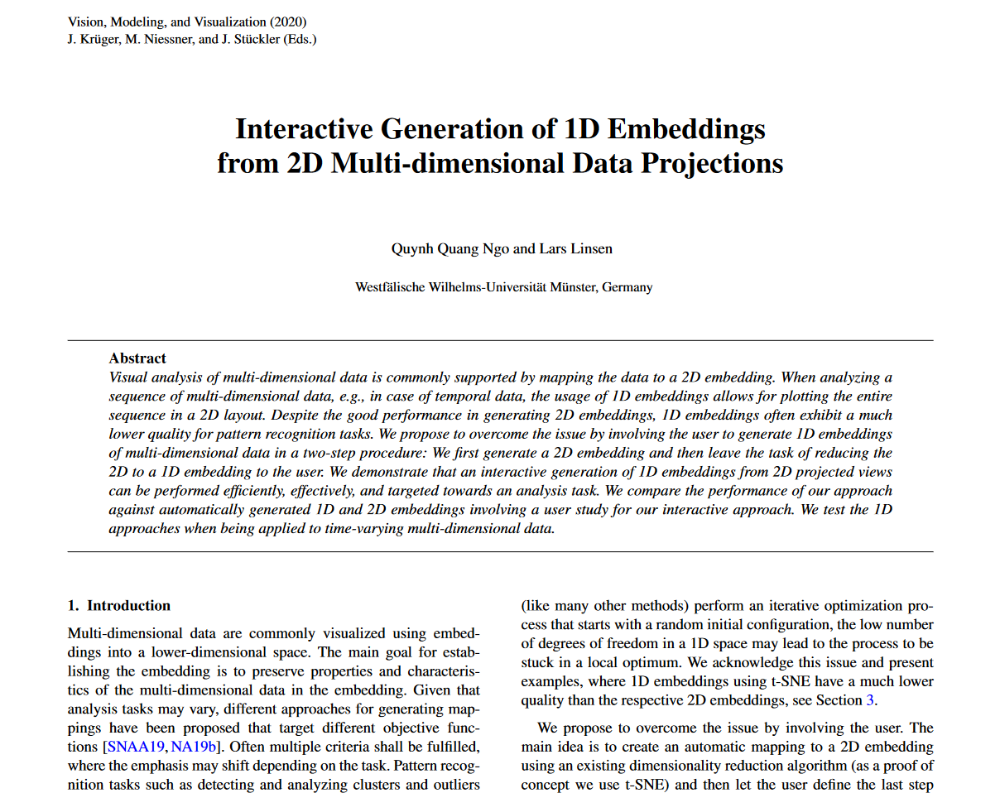

Interactive Generation of 1D Emeddings from 2D Multi-dimensional Data Projections | HCI Stuttgart


Authors. Quynh Quang Ngo, Lars Linsen
Venue. VMV (2020)
Abstract. Visual analysis of multi-dimensional data is commonly supported by mapping the data to a 2D embedding. When analyzing a sequence of multi-dimensional data, e.g., in case of temporal data, the usage of 1D embeddings allows for plotting the entire sequence in a 2D layout. Despite the good performance in generating 2D embeddings, 1D embeddings often exhibit a much lower quality for pattern recognition tasks. We propose to overcome the issue by involving the user to generate 1D embeddings of multi-dimensional data in a two-step procedure: We first generate a 2D embedding and then leave the task of reducing the 2D to a 1D embedding to the user. We demonstrate that an interactive generation of 1D embeddings from 2D projected views can be performed efficiently, effectively, and targeted towards an analysis task. We compare the performance of our approach against automatically generated 1D and 2D embeddings involving a user study for our interactive approach. We test the 1D approaches when being applied to time-varying multi-dimensional data.